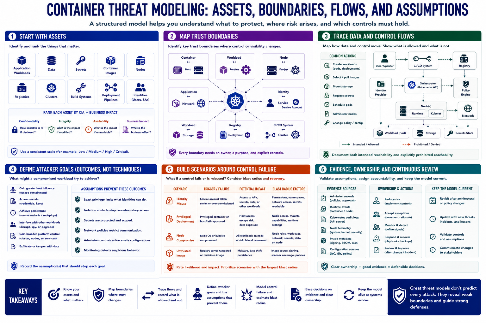

Threat Modeling the Container Environment
Connecting to LMS... Progress: in progress

Narration
Begin the threat model with assets. These include application workloads, data, secrets, container images, nodes, registries, clusters, build systems, deployment pipelines, and the identities used to operate them. Rank assets by confidentiality, integrity, availability, and business impact.
Next, map trust boundaries. Important boundaries exist between the container and host, workload and runtime, node and orchestrator, application and network, identity and service account, workload and storage, registry and deployment, and CI/CD system and cluster.
Trace data and control flows across those boundaries. Record which components can create workloads, select images, mount storage, request secrets, schedule pods, administer nodes, or change policy. The model should show both intended reachability and explicitly prohibited reachability.
Attacker goals can be described without exploitation detail. A compromised workload may seek greater host influence, access to secrets, persistence, interference with neighboring workloads, or broader platform control. Defenders should state which assumptions are supposed to prevent each outcome.
Build scenarios around control failure. Ask what happens if a workload identity is misused, a privileged deployment is approved, a node is compromised, or a registry serves an untrusted image. Estimate blast radius based on permissions, tenancy, network access, and recovery dependencies.
Finish with evidence and ownership. Identify admission records, runtime events, Kubernetes audit data, node telemetry, image metadata, and configuration sources that validate assumptions. Assign owners to reduce risk, accept exceptions, monitor controls, and revisit the model after architectural change.